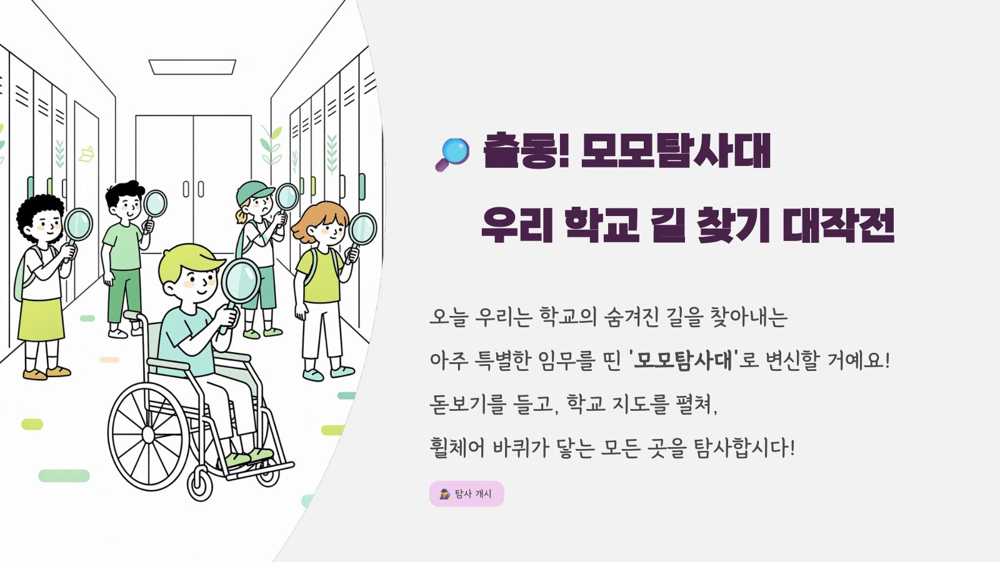
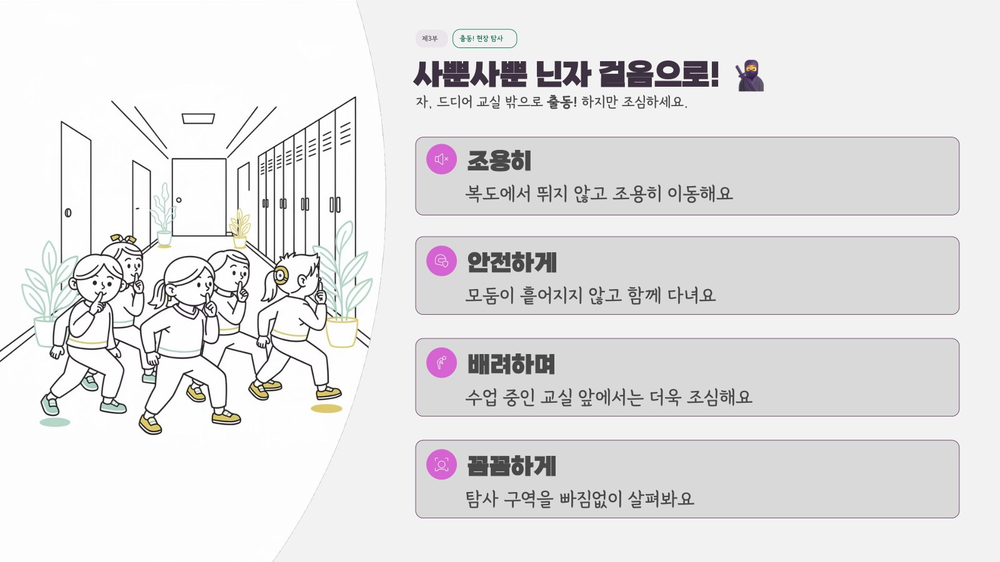
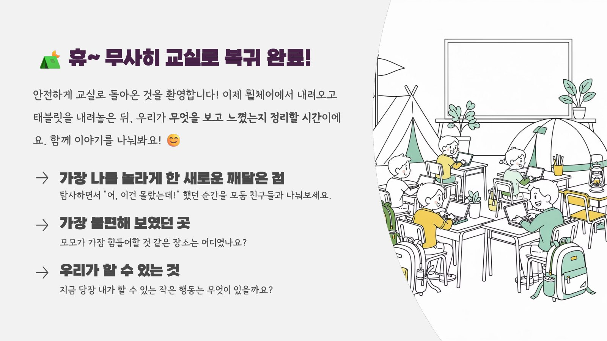

출동! 모모탐사대

2026 모모탐사대는
아름다운 가게 아름다운희망나누기 사업 지원으로 진행됩니다
오늘의 미션
영어교과실에서 화장실까지 다녀오기
휠체어로도 갈 수 있을까요?
탐사 순서
- 선발대 출발
- 선발대 보고
- 휠체어 탐사대 출동
- 묻고 답하기
- 한 줄 쓰기
네 팀이 하는 일
- 걷기 팀 2명: 걸어서 시간 재기
- 옵저버 팀 3명: 휠체어가 갈 수 있는 길인지 살피기
- 휠체어 탐사대 5명: 휠체어로 가 보고, 재고, 기록하기
- 플로어 패널, 나머지 모두: 탐사대에게 할 질문 준비하기
걷기 팀의 미션
- 걷기 1: 별관 화장실까지
- 걷기 2: 본관 1층 교직원화장실까지
- 영어교과실 문에서 출발, 평소 걸음으로
- 각자 자기 시간 재기
옵저버 팀의 미션
- 별관 안, 바깥 길, 본관 안을 한 곳씩 맡기
- 계단이나 턱이 있는지
- 휠체어가 지나갈 수 있는지
- 못 지나가면 다른 길이 있는지
스톱워치 켜는 법
- 시계 앱 열기
- 아래쪽 ‘스톱워치’ 누르기
- 출발할 때 ‘시작’ 누르기
- 도착하면 ‘중지’ 또는 ‘중단’ 버튼 누르기
선발대 뽑기
- 걷기 팀 2명
- 옵저버 팀 3명
- 미션 카드를 받고 바로 출발, 6분 안에 복귀
휠체어 탐사대 대원 5명 역할
- 대원 1 휠체어 사용자: 휠체어를 타고 가기
- 대원 2 휠체어 도우미: 휠체어 밀기
- 대원 3 시간 측정: 화장실 문 앞까지 시간 재기
- 대원 4 기록: 탐사일지 쓰기
- 대원 5 촬영: 사진과 영상 남기기
휠체어 탐사대 뽑기
- 다섯 명
- 뽑히지 않은 사람은 플로어 패널
화장실 문에서 볼 것

원본 슬라이드 글 보기
화장실: 열려라 참깨! 어떤 문일까? 장애인 화장실에 도착했어요! 문은 어떻게 열리나요? 손을 대면 스르륵 열리는 자동문인가요, 아니면 무거운 미닫이문인가요?
좋은 문: 자동으로 열리는 문, 가볍게 밀리는 미닫이, 손잡이가 넓은 레버형. 불편한 문: 무겁고 두꺼운 여닫이문, 작고 동그란 손잡이, 문 앞 높은 턱.
탐사일지에 적을 것
- 화장실까지 걸린 시간
- 문의 폭과 종류
- 화장실 안의 가로와 세로
- 세면대 높이
- 변기 옆 손잡이 모양
- 바뀌면 좋을 점
출동 전 약속

원본 슬라이드 글 보기
제3부 출동! 현장 탐사. 사뿐사뿐 닌자 걸음으로! 자, 드디어 교실 밖으로 출동! 하지만 조심하세요.
조용히: 복도에서 뛰지 않고 조용히 이동해요. 안전하게: 모둠이 흩어지지 않고 함께 다녀요. 배려하며: 수업 중인 교실 앞에서는 더욱 조심해요. 꼼꼼하게: 탐사 구역을 빠짐없이 살펴봐요.
선발대 보고
걷기 팀
옵저버 팀
“(맡은 곳)은 휠체어로 갈 수 (있습니다 / 없습니다). 이유는 ___입니다.”
플로어 패널 활동
- 읽기자료 읽기
- 휠체어로 걸릴 시간 예상하기
- 탐사대에게 할 질문 두 개 쓰기
14:00
교실로 돌아와 함께 보기

원본 슬라이드 글 보기
휴~ 무사히 교실로 복귀 완료! 안전하게 교실로 돌아온 것을 환영합니다! 이제 휠체어에서 내려오고 태블릿을 내려놓은 뒤, 우리가 무엇을 보고 느꼈는지 정리할 시간이에요. 함께 이야기를 나눠봐요!
가장 나를 놀라게 한 새로운 깨달은 점: 탐사하면서 "어, 이건 몰랐는데!" 했던 순간을 모둠 친구들과 나눠보세요. 가장 불편해 보였던 곳: 모모가 가장 힘들어할 것 같은 장소는 어디였나요? 우리가 할 수 있는 것: 지금 당장 내가 할 수 있는 작은 행동는 무엇이 있을까요?
묻고 답하기
- 탐사대의 한마디
- 플로어 패널의 질문
- 홍윤희 대표님의 이야기
걸린 시간 비교
갈 수 있는 화장실이 다르고, 같은 화장실도 걸리는 시간이 다릅니다.
바꿀 점 한 가지
- 누구의 어떤 어려움을 줄일까
- 우리가 지금 할 수 있는 일
- 학교에 요청할 일
오늘 내가 새로 알게 된 것
하나를 골라 활동지에 쓰기
- 새로 알게 된 것
- 직접 물어보고 싶은 것
- 내가 할 수 있는 것
다음 시간에는
출동, 흰지팡이 탐사대